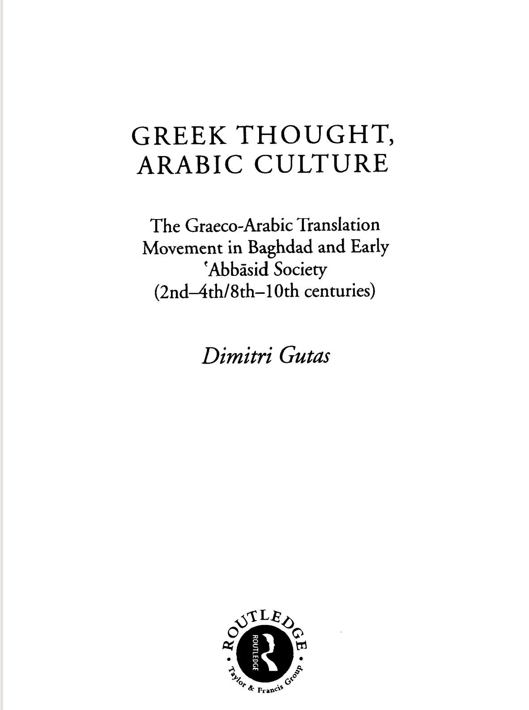

公元756年第一位摩尔国王阿夫德拉曼一世，定都科尔多瓦，同时宣布独立。阿夫德拉曼三世时期，科尔多瓦成为西方最繁华的城市、欧洲最大的城市及工业、科学、文化中心。公元10世纪，摩尔人统治达到鼎盛时期。后来，科尔多瓦哈里发帝国分裂为若干个王国。面对阿拉伯人对西班牙的侵略和占领，基督教人开始进行反抗。1085年基督教军队收复了托莱多，卡斯蒂利亚将该城定为首都。由于托莱多保存了许多由原穆斯林统治者收集的古希腊典籍和由古希腊文译为阿拉伯语的典籍，欧洲各地的学者慕名而来，自发开展了翻译运动，“托莱多翻译院”就此逐渐形成。
从12世纪到13世纪，“托莱多翻译院”由最初局限于学者团体中的自发行为走向了真正的知识传播，其赞助者也由最初的基督教会转移至了卡斯蒂利亚皇家。它的发展不仅推动了基督教战胜伊斯兰教，最终收复西班牙泉景，也为之后欧洲的文艺复兴奠定了基础，促进了欧洲各地民族意识的加强。如果说文艺复兴和大航海是欧洲近代史的开端，托莱多翻译院便可看作是“开端的开端”
但值得思索的一点是，经托莱多翻译院传播的知识是由阿拉伯人引入欧洲，或加以保管的。所以，从某种程度来说，近代欧洲开端的“根源”是阿拉伯文明。
是“西班牙”还是“安达卢西亚”？是“收复”还是“沦陷”？对于托莱多翻译院的历史，穆斯林作为失败的一方，有怎样的视角？
——好书推荐：Greek Thought, Abrabic Culture, 从阿拉伯人的角度看待这段充满着权力斗争的翻译史，我们是否能得到不同的答案？
